This directory contains samples for Rogue Wave Views Data Access package.
| Rogue Wave Views Data Access Gantt chart sample | |
| 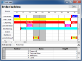 | This sample shows how to use an IliDbGantt. |
| Rogue Wave Views Data Access Grapher sample | |
| 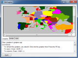 | This sample shows how to customize an IliDbGrapher. |
| Rogue Wave Views Data Access DbStudio sample | |
| 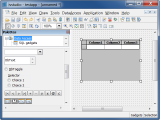 | This sample defines an Rogue Wave Views Studio with static Data Access libraries. The Manager package is needed for this sample. |
| Rogue Wave Views Data Access Picture sample | |
| 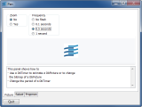 | This sample shows how to change and animate the bitmap of a DbPicture. |
| Rogue Wave Views Data Access Select sample | |
| 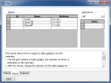 | This sample shows how to inspect a Table Gadget's current selection. |
| Rogue Wave Views Data Access Propertie Manager sample | |
| 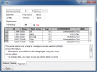 | This sample shows how to use property managers to highlight some information. |
| Rogue Wave Views Data Access Folio sample | |
| 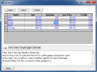 | This sample shows how to customize a Table Gadget look and how to define a custom subclass. |
| Rogue Wave Views Data Access Form sample | |
| 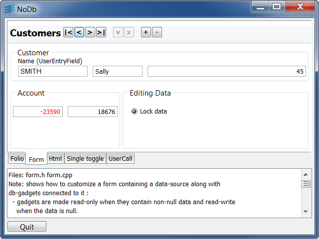 | This sample shows how to modify a datasource by using db-gadgets connected to it. |
| Rogue Wave Views Data Access Html sample | |
| 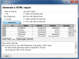 | This sample shows how to use the HTML Reporter to generate a HTML report. |
| Rogue Wave Views Data Access Single Toggle sample | |
| 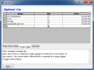 | This sample shows how to modify the current editor of a Table Gadget's column. |
| Rogue Wave Views Data Access User Call sample | |
| 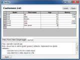 | This sample shows how to define global callbacks. |
| Rogue Wave Views Data Access Runner sample | |
| 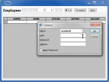 | This sample defines a generic Data Access application that can read an .iva file. |
| Rogue Wave Views Data Access Gauge sample | |
| 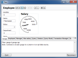 | This C++ sample shows how to connect a circular gauge to a SQL datasource column. |
| Rogue Wave Views Data Access Employee sample | |
| 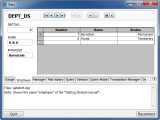 | This C++ sample shows how to display a list of employees for the chosen department. |
| Rogue Wave Views Data Access Manager sample | |
| 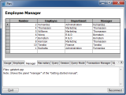 | This C++ sample shows how to display employee information taken from two tables. |
| Rogue Wave Views Data Access Max Salary sample | |
| 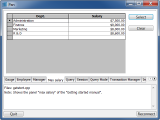 | This C++ sample shows how to display the maximum salary for each department. |
| Rogue Wave Views Data Access Query sample | |
| 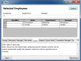 | This C++ sample shows how to use the IliSQLTable::setQueryConjunct member function to dynamically modify the selection criteria. |
| Rogue Wave Views Data Access Session sample | |
| 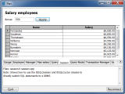 | This C++ sample shows how to use IliSQLSession and IliSQLCursor classes to directly submit SQL statement to a database. |
| Rogue Wave Views Data Access Query Mode sample | |
| 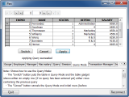 | This Rogue Wave script sample shows how to use the query mode. |
| Rogue Wave Views Data Access Transaction Manager sample | |
| 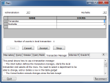 | This Rogue Wave script sample shows how to use a transaction manager. |
| Rogue Wave Views Data Access Informix 9 sample | |
| 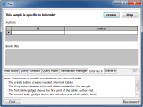 | This Rogue Wave script sample shows how to use Informix 9 collection property. |
| Rogue Wave Views Data Access Oracle 9i sample | |
| 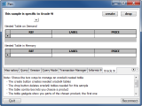 | This Rogue Wave script sample shows how to use Oracle 9i nested tables property. |
{kind=link}
{kind=link}
{kind=link}
{kind=link}
{kind=link}
{kind=link}
{kind=link}
{kind=link}
{kind=link}
{kind=link}
{kind=link}
{kind=link}
{kind=link}
{kind=link}
{kind=link}
{kind=link}
{kind=link}
{kind=link}
{kind=link}
{kind=link}
{kind=link}
{kind=link}